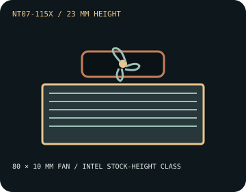

[ INDIVIDUAL COMPONENT // COOLING ]
SilverStone NT07-115X
A 23 mm ultra-low-profile cooler rated by SilverStone for CPUs up to 65 W TDP, with an 80 × 10 mm PWM fan.

IDENTIFICATION: NT07-115X is an Intel LGA115x/1200 cooler. It is not the AMD NT07-AM4 or the separate NT07-1700 model; do not treat those variants as interchangeable.
Manufacturer specifications
| Overall dimensions | 90 × 90 × 23 mm overall; 80 × 80 × 10 mm fan. Approximate assembly mass: 180.3 g. |
|---|---|
| Fan / thermal limits | 80 mm PWM fan, 1,500–3,600 RPM, 15.6–28.1 CFM, 0.8–2.6 mm H₂O, 21.9–34.7 dBA. SilverStone rates the cooler for CPUs up to 65 W TDP; check processor package power and case airflow. No radiator. |
| Mounting kit and sockets | Supplied Intel mounting hardware for LGA 1150/1151/1155/1156/1200 only. No AMD support is listed for this model. Consult the NT07-115X guide and use the matching socket backplate/fasteners. |
| Clearance caveats | Reserve at least 23 mm above the CPU and check its 90 × 90 mm footprint. Ensure fan intake is not blocked by memory, board components, a case panel, or adjacent chassis structures. Verify the host supports this legacy socket mount. |
Safe installation and maintenance
Install only in a supported LGA115x/1200 board using the NT07-115X hardware. Follow the current SilverStone instructions; do not adapt an NT07-1700 or AM4 kit by appearance alone. Clean the low-clearance fan carefully and verify fan speed and CPU temperatures after installation.
- Power down and disconnect AC before mounting or servicing.
- Do not use the 65 W rating as a substitute for CPU and chassis thermal validation.
Manufacturer sources
- SilverStone — NT07-115X product specificationsPublished dimensions, fan limits, socket coverage, and 65 W thermal rating.
- SilverStone — NT07-115X manual (PDF)Manufacturer installation guide; direct server access may vary by region.
Static catalog reference only; follow the manual and inspect this model's mounting before installation.